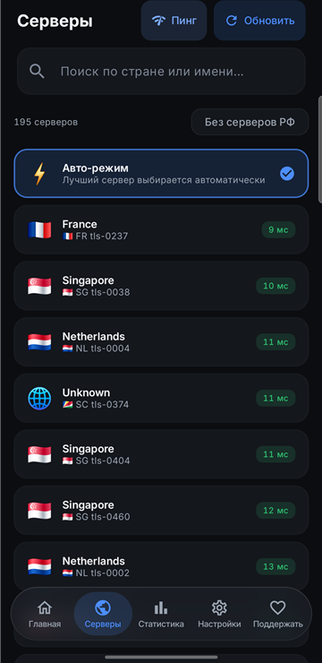
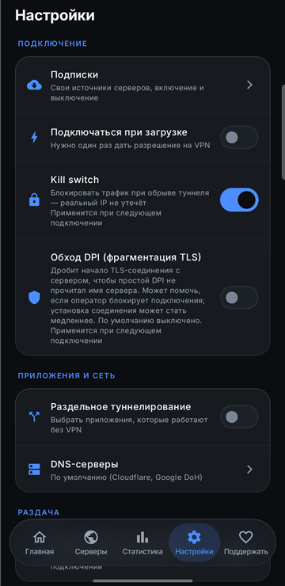
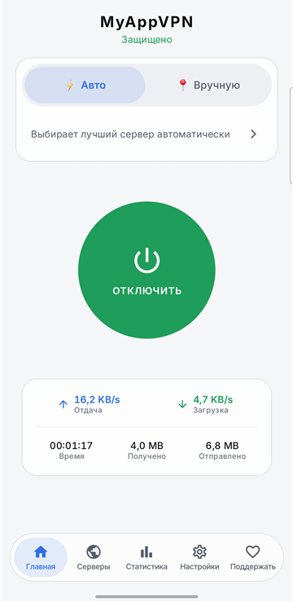

Auto mode
One button. The app tests servers and connects to the fastest one that really opens Telegram — not just the one with the best ping.
Open source · Android 8.0+ · Android TV
One tap.A working server.
MyAppVPN is a free Xray / VLESS client for Android. It finds a server that actually works, connects, and quietly moves you to another one if the current server gets blocked.
Free · no ads · no account
What it does
One button. The app tests servers and connects to the fastest one that really opens Telegram — not just the one with the best ping.
When a server gets blocked, traffic moves to another one on the fly, without dropping the connection.
An auto-updated subscription collected and checked by a bot every few hours. You can add your own subscriptions too.
Powered by Xray-core. Only REALITY and TLS servers make it into the built-in list.
Pick apps that skip the VPN — or the other way round, send only selected apps through it.
Optional TLS fragmentation splits the start of the connection so simple DPI can't read the server name.
Your own exit on ordinary web hosting for networks where regular servers don't get through. Beta.
Works on Android TV boxes and TVs, shares the VPN over a hotspot, has a kill switch and Always-on VPN.
How it works
Download it from GitHub Releases and allow installation from unknown sources.
No accounts, no keys, no config files to paste.
The app picks a working server and keeps you on one, switching when needed.
Screenshots





Use another client?
The server list the app uses is public. Add it to v2rayNG, Hiddify or any client that reads VLESS subscriptions.
https://cdn.jsdelivr.net/gh/indelingDanil/MyAppVPN-subs@output/vless.txt
FAQ
Yes. No subscription, no ads, no account. It's a personal open-source project; donations are welcome but optional.
arm64 fits most phones, TV boxes and TVs. If it says "App not installed", take arm32 — it's for 32-bit and older budget devices. Android 8.0 or newer is required.
Google Play has strict rules for VPN apps, and the app works with public servers it doesn't own. The APK on GitHub Releases is the official source; updates install over the previous version and keep your settings.
They are public servers run by unknown people. They can see unencrypted traffic, so don't send passwords or banking data through them. HTTPS sites stay encrypted. For sensitive use, add your own server or subscription.
VLESS with REALITY or TLS over TCP, WebSocket, gRPC, HTTPUpgrade, XHTTP and mKCP, via Xray-core. Plus OpenFlux, a separate mode with your own exit on web hosting.
No telemetry and no analytics. The source code is open under GPL-3.0, so anyone can check.
Yes, on TV boxes and TVs with Android 8.0+. Install the arm64 APK; most boxes support it.
Latest version on GitHub Releases. Pick the file for your device: